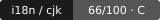

Point it at a repo. It scans for the text bugs that quietly break Japanese, Korean, Chinese, emoji, and right-to-left input — then grades the repo out of 100, with a shareable card, a README badge, and an exit code you can gate CI on.
$ npx @greymoth/i18n-scorecard ./your-repo
Writes a scorecard, a 1200×630 share card, and a badge into ./i18n-report/. No config, no account, nothing leaves your machine.
See a sample scorecard → The share cardThirteen checks across seven categories. The detection is lifted straight from a year of real fixes — catalogued here — not written from a checklist.

drops into a README from badge.mdBuilt on Cursed Strings, a field guide to real text bugs, and a public corpus of the CJK/Unicode ones — each linked to an actual pull request, not remembered.
github.com/greymoth-jp